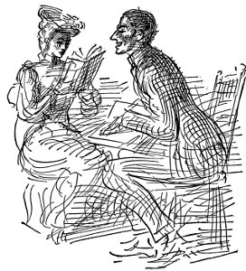
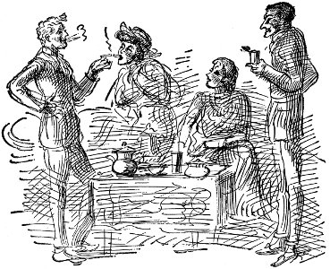

Ateş açıldığında ulusal sarayın önündeydim. Telaş içinde koşuşan binlerce kadın, erkek, çocukla birlikte Plaza'yı geçtim, içlerinden çoğu kaçıp kurtulmaya çalışırken yere düştü
yeni yüksek dağlar bulundu
Ah, Jim O'Shea'yı atıverdiler Hint Adacığına
Yerliler, oralardaki, bayıldılar saçlarına
Bayıldılar onun İrlandalı gülücüğüne
sanatta karmaşa
haydutlar vahşi dağlarda güvenlik içinde
Görevinden atılan Başkan'ın yerine General Huerta'nın geçici Meksika Başkanlığına seçilmesinin şansız, mantıksız, garip bir durum olduğunu düşünüyor Washginton
kentteki korku ağından üç kişi kaçtı
Otelin şekerine kum karıştırdı yazar Amerika'ya sürgün olarak geldiğini ama yalnızca sefalet bulduğunu söyledi
eski çin imparatoriçesi lung yu yasak kent'teki
sarayında öldü
la cucaracha la cucaracha
Ya no quiere caminar
Porque no tiene
porque no tiene
Marijuana que fumar
cumhuriyeti örgütlerken işçi sınıfının ihmal edilmesi bir ayaklanmaya daha yol açabilir
altı yüz amerikalı başkentten kaçtı
Yüzüklerin olacak parmaklarında
Zillerin olacak ayaklarında
Fillerin olacak üzerine bineceğin
Benim küçük İrlanda gülüm
Haydi gel prensine bir dahaki Saint Patrick günü
Oluver Mrs. Mumbo Jumbo Jijibhoy Jay O'Shea
Eleanor Stoddard
Küçükken her şeyden nefret ederdi. İriyarı, kızıl saçlı, sakal, bayat pipo tütünü kokan babasından nefret ederdi. Mezbahada çalışırdı babası, giysilerinde pis hayvan kokusuyla eve gelir, koyunların, öküzlerin, domuzların insanların kesilmesi üzerine kanlı fıkralar anlatırdı. Eleanor kan kokusundan, görüntüsünden nefret ederdi. Akşamları rüyalarında annesiyle Oak Park'ta büyük, temiz, beyaz bir evde yaşadığını görürdü. Kışın yerlerde kar olduğu zamanlar, masaya beyaz keten örtü sererken, üzerine parlak, beyaz gümüşten çatal bıçak, beyaz çiçekler, bir sosyete hanım olan beyaz giysiler içindeki annesinin önüne bembeyaz tavuk eti koyarken görürdü. Ama sonra, ansızın küçücük bir kırmızı leke ortaya çıkardı, masada büyürdü, büyürdü, annesi çaresizlik içinde ellerini oraya buraya savurur, Eleanor onu süpürüp atmaya uğraşır, ama o büyüyüp bir kan lekesi, tüm masaya yayılan, kanlı bir kuyuya dönüşen kan birikintisi olur, Eleanor burnunda mezbaha kokusuyla bağırarak uyanırdı bu karabasandan.
On altı yaşında lisedeyken Isabelle adındaki kızla birlikte erkek eli değerse kendilerini öldüreceklerine ant içtiler. Ama o sonbahar kız arkadaşı kızıl hastalığının ardından zatürreeye yakalanarak öldü.
Eleanor'un sevdiği bir başka kişi de İngilizce öğretmeni Miss Oliphant'tı. Miss Oliphant İngiltere'de doğmuştu. Anasıyla babası o on yaşlarında bir kızken Chicago'ya gelmişlerdi. İngiliz diline büyük tutkuyla bağlıydı, öğrencilerinin açık “a” sesi çıkarmaları için uğraşır, 19. yüzyıl ortalarında yaşamış İngiliz kadın edebiyatçısı olduğunu, Floransa üzerine çok hoş şeyler yazdığını ileri sürdüğü belli bir Miss Oliphant'la uzaktan akrabalığı yüzünden İngiliz edebiyatıyla ilgili konularda kendini tam yetkili sayardı. Arada bir umut veren öğrencilerini, daha iyi ailelerin çocukları gibi gözükenleri, uykulu bir mavi İran kedisiyle ve bir şakrakkuşuyla yapayalnız yaşadığı apartman katına çaya çağırırdı. Onlara Goldsmith'i, Doktor Johnson'un özlü sözlerini, Keats'i, Corcordium'u, böylesine genç ölmesinin ne korkunç olduğunu, Tennyson'u, onun kadınlara nasıl kaba davrandığını, Bakanlıklar Caddesi'ndeki muhafızları nasıl değiştirdiklerini, 8. Henry'nin Hampton Court'ta ektirdiği şaraplık üzümleri, karayazgılı İskoç Kraliçesi Mary'yi anlatırdı. Miss Oliphant'ın anasıyla babası Katolik'ti, Stuart'ların, İngiliz tahtının gerçek mirasçıları olduğuna inanıyorlardı. Kralın şerefine içerlerken şarap bardaklarını su testisinin üzerinden geçirirlerdi. Bu anlatılanlar, kızlarda, oğlanlarda büyük coşkular uyandırır, en çok coşkuya da Eleanor'la Isabelle kapılır, Miss Oliphant onlara kompozisyon dersinde yüksek notlar verir, kitap okumaya yöneltirdi. Eleanor, ondan çok hoşlanır, dersine büyük ilgi gösterirdi. Onun ağzından dökülen yalnızca “İngiliz Yazınının Büyük Anıtları,” “Kuledeki Küçük Prenses” ya da “Saint George ve Merrie England” gibi cümleler bile belkemiğinde küçük ürpertiler hissetmesine neden olurdu. Isaballe öldüğünde Miss Oliphant bu konuda çok sevecen davrandı, onu tek başına çaya çağırdı, temiz, canlı bir sesle Lycidas'ı okudu, eve gittiğinde de Adonais'i okumasını söyledi. Kendisi okuyamayacaktı, çünkü böyle bir şey yaparsa sinirlerinin bozulacağını biliyordu. Sonra, bir küçük kızken en iyi arkadaşı olan kızı anlattı, İrlandalı, kızıl saçlı, Crown Darby porselenleri kadar ak teni olan bir kızdı, şekerim, nasıl Hindistan'a gitmişti, orada ateşlenip ölmüştü, nasıl Miss Oliphant bu acıyla yaşamayacağını düşünmüştü, Crown Darby porselenleri de nasıl keşfedilmişti, onu bulan son meteliğine kadar tüm parasını nasıl bu yetkin porselenin bulunmasına harcamıştı, son bir öğe olarak altın gerekmişti, onlar da neredeyse açlıktan ölüyorlardı, karısının nişan yüzüğünden başka şeyleri kalmamıştı, nasıl da ocaktaki ateşi söndürmemek için iskemlelerini, masalarını yakmışlardı ve sonunda Kral Ailesi'nin kullandığı o güzelim porseleni keşfetmişti.
Eleanor'u, Sanat Enstitüsü'nde derslere devam etmesi için yüreklendiren Miss Oliphant oldu. Duvarlarında Rossetti'nin, Burne-Jones'un resimlerinin kopyaları asılıydı, Eleanor'a, Raffaello öncesi sanatı anlatırdı. Ona sanatın fildişi beyazı, çok saf, soylu, uzak, hüzün dolu bir şey olduğunu hissettirirdi.
Annesi habis anemiden öldüğünde Eleanor on sekiz yaşında, incecik bir kızdı, gündüzleri Loop'ta bir dantelacıda çalışıyor, akşamları Sanat Enstitüsü'nde ticari sanat dersleri okuyordu. Cenazeden sonra eve gidip eşyalarını topladı, Moody Pansiyon'a taşındı. Babasını görmeye hemen hemen hiç gitmiyordu. Bazen babası telefon ederse elinden geldiğince konuşmaktan kaçınıyordu. Onu unutmak istiyordu.
Dantelacıda seviliyordu çünkü çok ince davranışları vardı, mağazanın sahibi yaşlı Mrs. Lang'ın dediği gibi oraya “tanımlanması zor bir şık hava” veriyordu, ama ona yalnızca on dolar ödüyorlar, bunun da beşi kiraya gidiyordu. Çok yemek yemezdi, ama pansiyonun yemekleri öyle kötüydü, öteki kızlarla birlikte oturmaktan öyle nefret ediyordu ki, kimi zaman odasında içmek için fazladan bir şişe süt alması gerekir, bazı haftalar, kaleme, resim kâğıdına ayıracak parasının kalmadığını görür, babasını görmeye gitmek, ondan birkaç dolar istemek zorunda kalırdı. Babası bu parayı seve seve verir, bu da, onun babasından her zamankinden çok nefret etmesine yol açardı.
Akşamları sığındığı küçük, bayağı, içinde çirkin yatak örtüleri, çirkin demir karyola bulunan odasında, aşağıdaki ortak oturma salonundan gelen dua seslerini dinleyerek halk kütüphanesinden almış olduğu Ruskin ve Peter'i okurdu. Bazen kitabı dizlerine bırakır, pansiyonda istediği gibi kullanmasına izin verilen tek şey olan solgun kırmızı ışıklı elektrik ampulüne bakarak gece boyu otururdu.
Ne zaman parasını artırmalarını istese Mrs. Lang, “Ama niçin, yakında evlenip benden ayrılırsın, şekerim. Senin gibi bir kız, tanımlanamaz şıklığı olan biri uzun süre yalnız kalmaz, evlendikten sonra da paraya gerek duymazsın,” diyordu.
Pazar günleri genellikle trene binip teyzesinin oturduğu Puliman'a gidiyordu. Betty Teyze, sessiz, ev kadını tipinde ufak tefek bir kadındı. Eleanor'un tüm garipliklerine genç kız hevesleri gözüyle bakar, ona koca olabilecek uygun bir delikanlı arar dururdu. Kocası Joe Enişte, bir değirmende ustabaşıydı. Yıllarca değirmende çalışmak onu duvar gibi sağır yapmıştı. Oysa gerçekte, değirmendeyken söylenenlerin hepsini çok iyi duyabildiğini ileri sürüyordu. Eğer mevsim yazsa, pazar günlerini marul, yıldızçiçeği yetiştirmekte uzmanlaştığı bahçesini çapalamakla geçirirdi. Kışın ya da kötü havalarda, ön odada oturur, Demiryolu İşçisinin Dergisi'ni okurdu. Betty Teyze, Ev Hanımları Dergisi'nden tariflerini bulduğu, büyük emeklerle hazırlanan yemekler pişirir, yemek masasındaki çiçekleri düzenlemesini de Eleanor'dan isterlerdi. Yemekten sonra Betty Teyze bulaşıkları yıkar, o kurular, yaşlılar öğle uykularını uyurlarken de Chicago Tribune'un sosyete bölümünü okurdu ön odada. Akşam yemeğinden sonra hava iyiyse, yaşlılar da onunla birlikte istasyona yürüyüp trene bindirir, Betty Teyze onun gibi sevimli bir kızın büyük kentte tek başına yaşamasının son derece utanç verici şey olduğunu söylerdi. Eleanor pırıl pırıl, acı bir gülümsemeyle, korkmadığını söylerdi.
Pazar akşamları eve dönerken bindiği vagonlar, kırlarda, tepelerde, açık havada geçirilmiş bir gün yüzünden yapış yapış olmuş pislik içinde, güneş yanığı delikanlılarla, kızlarla tıklım tıklım dolu olurdu. Eleanor nefret ederdi onlardan, yanlarında avaz avaz bağıran yaramaz çocuklarıyla, pis pis sarmısak, şarap kokan İtalyanlardan; uzun bir öğleden sonrayı salt bira içmekle geçirmiş kırmızı suratlı Almanlardan; tahta gibi suratları, mavi alkolik gözleriyle kendisine bakan sarhoş Finli, İsveçli işçilerden nefret ederdi. Bazen adamın biri onunla konuşmaya kalkışır, Eleanor başka vagona geçmek zorunda kalırdı.
Bir keresinde vagon çok kalabalıkken, kıvırcık saçlı bir adam bilinçli olarak gelip ona sürtünmeye başladı, içerisi çok sıkışıktı, adamdan uzaklaşamadı. Bağırarak yardım istememek için kendini zor tutuyordu, bunu yapmamasının tek nedeni de karışıklık çıkarmayı çok bayağı bir şey olarak görmesiydi. Sonunda güçlükle yol açıp istasyonda indiğinde denetleyemediği biçimde başı dönüyordu, eve giderken bir eczanede durup biraz nişadırruhu aldı. Pansiyonun koridorundan hızla geçip hâlâ titreyerek kendi odasına koştu. Midesi bulanıyordu, kızlardan biri onu banyoda kusarken bulunca yüzüne garip garip baktı. Böyle zamanlarda kendini çok mutsuz hissediyor, intihar etmeyi düşünüyordu. Aybaşı olduğunda da çok sancı çekiyor, her ay en az bir gün yatakta kalması gerekiyordu. Genellikle de bir hafta hasta gibi dolaşıyordu.
Bir sonbahar günü, Mrs. Lang'a telefon ederek hastalandığını, yatması gerektiğini söyledi. Odasına dönüp yatarak Komola'yı okudu. Moody Pansiyon'un kitaplığında bulunan George Eliot'un toplu eserlerini de okurdu. Temizlikçi kadın yatağını düzeltmek için kapıyı açtığında, “Hastayım . . . Ben burasını temizlerim, Mrs. Koontz,” dedi. Öğleden sonra acıktı, çarşafları buruş buruştu. Mrs. Lang'a, kımıldayamayacak kadar hasta olduğunu söyledikten sonra dışarı çıkabilecek durumda olduğu için utanmasına karşın bir dakika daha bu odada kalırsa boğulacağını sandı, özenle giyindi, kendini biraz da hırsız gibi hissederek aşağı indi. “Demek pek de öyle hasta değilsin,” dedi yönetici hanım salonda önünden geçerken. “Biraz hava alma gereği duydum yalnızca.” Kapıdan çıkarken Mrs. Biggs'in “Sizin adınıza pek hoş bir şey değil,” diye söylendiğini işitti. Mrs. Biggs, sanat okulunda öğrenci olduğu için Eleanor'dan çok kuşkulanıyordu.
Kendini yine çok güçsüz hissederek bir eczaneye girip suya karıştırılmış nişadırruhu içti. Sonra, tramvayla Grant Park'a gitti. Çok güçlü bir kuzeybatı rüzgârı kum taneciklerini, kâğıtları göl kıyısı boyunca döndürerek savuruyordu.
Sanat Enstitüsü'ne girip yukarı Stickney Odası'na çıkarak Whistler'in resimlerine bakmak istiyordu. Chicago'da en çok sevdiği yer, dünyada en çok sevdiği yer Sanat Enstitüsü'ydü. Tedirgin eden adamlardan uzak sessizliğini, resimlerden gelen hoş vernik kokusunu seviyordu, kalabalığın içeri dolup orasını korkunçlaştırdığı pazar günleri dışında. Bugün, iyi giyimli, gri tilki kürkü yakalık takmış, tüylü gri küçük şapka giymiş bir kızdan başka Stickney Odası'nda hiç kimse yoktu. Kız, gözlerini dikmiş Manet'nin bir portresine bakıyordu. Eleanor onunla epey ilgilenmişti, onun baktığı resimden çok Whistler'e bakıyormuş gibi yaptı. Her fırsatta kızı inceliyordu. Birden kendisinin de kızın yanında durup Manet'nin portresine bakmakta olduğunu fark etti. Ansızın gözleri birleşti. Öteki kızın açık kahverengi, birbirinden ayrık, badem gözleri vardı.
Sanki birinin karşı çıkmasını istiyormuş gibi kavgacı bir tavırla, “Bence dünyanın en iyi ressamı,” dedi.
Eleanor sesinin titremesini engellemeye çalışarak, “Bence de çok iyi bir ressam,” dedi. “Bu resmi severim.”
“Biliyorsun, bunu Manet yapmadı, bu Fantin-Latour'un resmi,” dedi öteki.
“Ah, evet, elbette,” dedi Eleanor.
Bir duraksama oldu. Bu işin burada bittiğinden korkuyordu, ama öteki kız, “Başka hangi resimleri seviyorsunuz?” diye sordu.
Eleanor dikkatle Whistler'e baktı, sonra usulca, “Whistler ve Corot'yu severim,” dedi.
“Ben de, ama en çok Millet'yi severim. Çizgileri öylesine yuvarlaktır, sıcaktır ki . . . Hiç Barbizon'a gittiniz mi?”
“Hayır, ama çok isterdim.” Bir duraksama daha oldu. “Ama bence Millet biraz bayağı, siz öyle düşünmüyor musunuz?” demek yürekliliğini gösterdi Eleanor.
“Şu taşbasması dua törenini mi söylemek istiyorsunuz? Evet, resimde dinsel duyguları çok bayağı buluyorum, tiksiniyorum, ya siz?”
Eleanor buna ne karşılık vereceğini bilemedi, başını sallayıp, “Ben Whistler'i severim, ona bakarken pencereye çevirsem gözlerimi her şey onun resimleri gibi pastel renklerde görünür bana,” dedi.
El çantasındaki küçük saate bakmakta olan kız, “Aklıma bir şey geldi,” dedi. “Saat altıya kadar eve gitmem gerekmiyor. Niçin benimle gelip bir çay içmiyorsunuz? Çok iyi çay bulabileceğimiz bir yer biliyorum, küçük bir Alman pastanesi. Saat altıya kadar dışarıda kalabilirim, uzun uzun çene çalabiliriz. Sizi çağırmamı göreneklere ters bulmuyorsunuz değil mi? Ben görenekleri sevmem, ya siz? Chicago'dan siz de nefret etmiyor musunuz?”
Evet, Eleanor Chicago'dan nefret ediyordu, geleneklere göreneklere bağlı kişilerden, her şeyden nefret ediyordu. Pastaneye gidip çay içtiler. Adı Eveline Hutchins olan griler içindeki öteki kız çayına limon koydu. Eleanor, boyuna gevezelik edip kızı güldürdü. Babasının Floransa'da ressam olduğunu, küçüklüğünden beri onu görmediğini açıklarken buldu kendini. Annesiyle babası boşanmışlar, annesi Armour ve Ortakları'yla ilişkisi olan bir işadamıyla yeniden evlenmiş, şimdiyse ölmüştü. Yalnızca Lake Forest'te birkaç yakını vardı. Sanat Enstitüsü'nde öğrenciydi, ama bu okulu bırakmayı düşünüyordu, çünkü öğretmenlerden hoşlanmıyordu. Chicago'da yaşamak ona göre çok korkunçtu. Doğu'ya gitmeyi istiyordu.
Eveline Hutchins, “Niçin Floransa'ya gidip babanla oturmuyorsun?” diye sordu.
“Evet, yapabilirim bunu bir gün, zamanı geldiğinde,” dedi Eleanor.
“Ah, ne yazık ki ben hiçbir zaman zengin olamayacağım,” dedi Eveline. “Babam rahip . . . Floransa'ya birlikte gidelim Eleanor, babana uğrayalım. Bir kez oraya varırsak artık bizi sokağa atamaz.”
“Bir gün bu yolculuğu yapmayı çok istiyorum.”
“Benim eve gitme zamanım geldi. Şey, nerede oturuyorsun? Yarın öğleden sonra buluşup tüm resimlere birlikte bakalım.”
“Ne yazık ki yarın işim olacak.”
“Peki, belki bir gece bize yemeğe gelirsin. Anneme, seni ne zaman çağırabileceğimizi soracağım. Konuşabileceğin bir kıza rastlamak öyle pek sık olan şeylerden değil. Biz Drexel Bulvarı'nda oturuyoruz, işte kartım. Sana yazarım, geleceğine söz ver, olmaz mı?”
“Seve seve, ama saat yediden önce olmasın . . . gördüğün gibi bir işim var, her gün yediye kadar orada bulunmam gerekli, pazar günleri dışında. O günler yakınlarımı görmeye giderim . . .”
“Lake Forest'e mi?”
“Evet . . . Kentte olduğum sıralarda bir tür YMCA olan Moody Pansiyon'da kalıyorum. Bayağı denilebilecek bir yer, ama şimdilik bana uygun geliyor . . . Adresi bu karta yazacağım.” Kart Mrs. Lang'ındı. “İthal Malı Dantelalar, El İşlemesi Kumaşlar.” Eleanor üzerine kendi adresini yazdı, öteki yüzü karaladı, Eveline'e verdi.
“Bu çok hoş bir şey,” dedi. “Hemen bu gece sana kart atacağım, geleceğine söz veriyorsun, değil mi?”
Eleanor, onun tramvaya binmesini izledi, sonra yavaşça caddede yürümeye başladı. Hastalığını tümden unutmuştu, ama şimdi öteki kız gidip sokakların rüzgârlı akşam koşuşması içinde yoluna koyulmuşken, kendini hayal kırıklığı içinde, çok kötü giyimli, yapayalnız hissediyordu.
Eleanor, Eveline Hutchins aracılığıyla bir sürü arkadaş edindi. Onlara ilk gittiğinde pek bir şeye dikkat edemeyecek kadar ürküntü içindeydi, ama daha sonra, özellikle de hepsinin kendisini ilginç, seçkin bir kız olarak gördüklerini anlayınca yanlarında kendini daha rahat hissetti. Doktor ve Mrs. Hutchins'in iki kızları, başka kentte üniversitede okuyan bir oğulları vardı. Dr. Hutchins, Unitarian papazıydı, çok açık düşünceliydi. Mrs. Hutchins, herkesin büyük yetenek belirtisi olarak gördüğü suluboya çiçek resimleri yapıyordu. En büyük kızları Grace Doğu'da Vassar'da okuyor, edebiyata karşı büyük eğilimi olduğu düşünülüyordu. Oğulları Harvard'da lisansüstü Yunanca derslerine devam ediyor, Eveline de burada, Kuzeybatı Üniversitesi'nde en ilginç derslere katılıyordu. Dr. Hutchins, yumuşak sesli, geniş, düzgün, pembe yüzlü, büyük, düzgün, beyaz, ölü gibi elleri olan bir adamdı. Hutchins'ler gelecek yıl Dr. Hutchins'in bir yıllık yurtdışı iznini kullanarak hep birlikte dışarı gitmeyi tasarlıyorlardı. Eleanor daha önce hiç bu tür konuşmalara tanık olmamıştı, içi ürperiyordu.
Sonra bir akşam Eveline, onu Mrs. Shuster'in evine götürdü. “Evde Mrs. Shuster'den hiç söz etme, olmaz mı?” dedi trende giderlerken. “Mr. Shuster resim satıcısıdır, babam onların biraz aşırı bohem olduklarını düşünüyor . . . Bunun nedeni de Mrs. Annie Shuster'in bir akşam bize yemeğe geldiğinde durmadan sigara içmesi . . . Onlara Auditorium'da konsere gideceğimizi söyledim.”
Eleanor kendine yeni bir giysi dikmişti, çok yalın, üzerinde çok az yeşil olan beyaz bir giysiydi bu, tam anlamıyla gece için değilse de hemen her yerde giyilecek türden bir şeydi. Tıknaz, ufak tefek, kızıl saçlı, sekerek yürüyen bir kadın olan Mrs. Annie Shuster girişte onların paltolarını çıkarmalarına yardım ederken giysisinin çok güzel olduğunu söyledi coşkuyla.
“Ah, evet, çok güzel,” dedi Eveline. “Gerçekten de bu gece kraliçeler gibi güzelsin, Eleanor.”
“Bahse girerim bu giysi bu kentte yapılmamıştır . . . Bana Paris'tenmiş gibi geliyor,” dedi Mrs. Shuster.
Eleanor, usulca gülümsedi, biraz kızardı, her zamankinden de güzelleşti.
İki küçük odaya tıka basa doluşmuş bir sürü kişi, sigara dumanı, kahve fincanları, bir çeşit punç kokusu vardı içeride. Mr. Shuster, ak saçlı, gri yüzlü, bedenine göre çok büyük bir başı, yorgun tavırları olan biriydi. İngiliz gibi konuşuyordu. Çevresinde ayakta duran birçok delikanlı vardı, içlerinden biriyle Sanat Enstitüsü'nde okurken şöyle bir tanışmıştı Eleanor. Adı Eric Egstrom'du, ondan hep hoşlanmıştı. Çok açık sarı saçlı, mavi gözlü, küçük kumral bıyıklı bir gençti. Mr. Shuster'in ona önem verdiği belli oluyordu. Eveline onu odada dolaştırdı, herkesle tanıştırdı, hepsine, kimi zaman şaşırtıcı gibi gelen sorular sordu. Hem erkekler, hem kadınlar sigara içiyor, kitaplardan, resimlerden, Eleanor'un adını hiç duymamış olduğu kişilerden söz ediyorlardı. Çevresine bakındı, pek bir şey konuşmadı, portakal rengi abajurların üzerindeki Yunan gölge resimleri, gerçekten çok çirkin olan duvardaki resimler, raflardaki iki dizi sarı kapaklı Fransızca kitap ilgisini çekti, burada çok şey öğrenebileceğini düşündü.
Evde sorarlar korkusuyla Eveline'in Auditorium'a gidip konser programına bakması gerektiğinden erken kalktılar. Eric'le bir başka delikanlı onları evlerine bıraktı. Eveline'i evine götürdükten sonra delikanlılar Eleanor'a nerede oturduğunu sordular, çok pis bir sokakta olduğu için Moody Pansiyon'da demekten nefret ediyordu. Bu yüzden de onlarla birlikte istasyona yürüyüp kendisiyle gelmelerine izin vermeden hızla merdivenleri çıkarak uzaklaştı, böylesine geç bir saatte tek başına dönmekten ödü patlamasına karşın.
Mrs. Lang'ın müşterilerinden çoğu, siyah saçları, ince, oval yüzü, saydam teni nedeniyle Eleanor'un Fransız olduğunu sanıyorlardı. Gerçekten de bir gün Mrs. Lang'ın “hani şu” McCormick'lerden biri olduğundan kuşkulandığı Mrs. McCormick, daha önce kendisiyle ilgilenmiş olan sevimli Fransız kızı sorunca Mrs. Lang'ın aklına bir şey geldi. Bundan sonra artık Eleanor Fransız olacaktı. Berlitz Okulu'na gidebilmesi için onun adına yirmi derslik para yatırdı, Fransızca dersleri alırsa her sabah dokuzla on arası ona izin verebileceğini söyledi. Aralık ve ocak ayları boyunca, haftada üç kez, pis kokulu alpaka ceket giyen yaşlı bir adamdan Fransızca dersleri aldı, mağazaya gelen alıcılarla konuşurken elinden geldiğince doğal görünmeye çalışarak arada bir ağzından Fransızca tümce kaçırmaya başladı, içerde birileri varken Mrs. Lang onu hep, “Matmazel,” diye çağırır oldu.
Eleanor çok çalıştı, akşamları sözlük yardımıyla okumak için Shuster'lerden sarı kaplı kitaplar ödünç aldı, kısa sürede de çocukluğunda Fransız dadıyla büyümüş Eveline'den daha iyi Fransızca öğrendi. Bir gün Berlitz Okulu'nda yeni bir öğretmeni olduğunu gördü. Yaşlı adam zatürreeye yakalanmış, onun yerine genç bir Fransız gelmişti. Keskin, iyice tıraş edilmiş bir çenesi, uzun kirpikli, büyük kahverengi gözleri olan ince bir genç adamdı. Eleanor görür görmez ondan, ince soylu ellerinden, insana uzak duran tavırlarından hoşlandı. Yarım saat içinde dersi unutmuşlar, İngilizce konuşuyorlardı, İngilizceyi gülünç bir vurgulamayla, ama açık seçik konuşuyordu. Eleanor özellikle gırtlaktan çıkardığı “r” seslerini çok beğendi.

Ertesi ders merdivenleri çıkarken aynı delikanlıyı bulup bulamayacağı kuşkusuyla acılar içindeydi. Buldu. Delikanlı ona yaşlı adamın ölmüş olduğunu söyledi. Eleanor üzülmesi gerektiğini düşünüyor, ama yapamıyordu. Delikanlı onun neler hissettiğini anladı, yüzünü yarı güler, yarı ağlar biçimde buruşturarak, “Vae victis,” dedi. Sonra kıza Fransa'daki evini, oradaki geleneksel kentsoylu yaşamdan nasıl nefret ettiğini, gençlik, gelecek, gökdelenler, Yirminci Yüzyıl Şirketleri ülkesi olarak gördüğü için Amerika'ya nasıl geldiğini, Chicago'yu ne kadar güzel bulduğunu anlattı. Eleanor hiç kimseden bu tür sözler duymamıştı, ona İrlanda'ya gidip, herkese yaltaklanma yeteneğini kazandıran Blarney Taşı'nı öpmüş olması gerektiğini söyledi. Bunun üzerine delikanlı çok saldırgan bir havaya bürünerek, “Mademoiselle, c'est la pure vérité,”[7] dedi. Eleanor ona bütünüyle inandığını, onunla tanışmanın çok ilginç olduğunu, arkadaşı Eveline Hutchins'le tanıştırmak istediğini söyledi. Sonra da delikanlı söylevini sürdürerek New Orleans'ta nasıl yaşadığını, bir Fransız gemisiyle kamarot olarak nasıl geldiğini, nasıl bulaşıkçılık, otobüs biletçiliği yaptığını, kabarelerde, daha da kötü yerlerde piyano çaldığını, zencileri nasıl sevdiğini, nasıl ressam olduğunu, stüdyo bulup resim yapmayı ne çok istediğini, ama parası olmadığını anlattı. Bulaşıkçılık, kabareler, zenciler bölümü Eleanor'u biraz ürkütmüştü, ama sanatla ilgilendiğini söylediğinde onu gerçekten Eveline'le tanıştırması gerektiğini düşünüp pazar günü Sanat Enstitüsü önünde buluşmalarını isterken cesaretini toplayarak geleneksel tavırları bir yana bıraktı. Ne olacaktı yani, yersiz kaçacağına sonradan karar verirlerse gitmek zorunda değillerdi.
Eveline büyük bir coşkuya kapılmıştı, ama Fransız erkeklerinin saldığı kötü ün yüzünden Eric Egstrom'u da yanlarına aldılar. Fransız çok geç kalmıştı, hiç gelmeyeceğinden ya da onu kalabalığın arasında yitirdiklerinden korkmaya başladıkları sıra Eleanor büyük merdivenlerden çıkmakta olduğunu gördü. Adı Maurice Millet'ydi. –hayır, hayır, o ressamla hiçbir ilgisi yoktu– Sanat Enstitüsü'ndeki resimlerin hiçbirine bakmak istemeyerek, hepsinin yakılması gerektiğini düşündüğünü söyleyerek, Eleanor'un daha önce hiç duymamış olduğu kübizm, fütürizm gibi sözcükler kullanarak hepsini şaşkınlıktan dondurdu. Eleanor onun Eveline'le Eric'i müthiş etkilemiş olduğunu hemen anladı, gerçekten de çay içtikleri sürece onun ağzının içine bakıp Eleanor'u tümden unuttular. Eveline Maurice'i evine çağırdı, hep birlikte Drexel Bulvarı'nda yemeğe gittiler, orada Maurice, Doktor ve Mrs. Hutchins'e çok incelikli davrandı, daha sonra da Shuster'lere gittiler. Oradan hep birlikte çıktıklarında Maurice onların katlanılmaz insanlar olduklarını, duvarlarına da iğrenç resimler astıklarını söyledi, “Tout ça c'est affreusement pompier,”[8] dedi. Eleanor şaşkınlıktan neredeyse dilini yutmuştu, ama Eveline'le Eric onu çok iyi anladıklarını, onların sanattan, eşeğin hoşaftan anladığı kadar anladıklarını söylemek istediğini belirttiler, buna da hep birlikte kahkahalarla güldüler.
Ondan sonraki görüşmelerinde Eveline, Maurice'e çılgınca âşık olduğunu açıkladı, ikisi birlikte uzun uzun ağlayıp ne olursa olsun o güzelim arkadaşlıklarının bunu da kaldıracağını söylediler. Drexel Bulvarı'nda, Eveline'in üst kattaki odasındaydılar. Şöminenin üzerinde Eveline'in aklından yapmaya çalıştığı Maurice'in pastel bir portresi vardı. Yatağın üzerinde, birbirlerine iyice sokulup sarılarak büyük bir ciddiyet içinde kendilerinden konuştular. Eleanor ona erkekler konusundaki duygularını anlattı. Eveline pek de benzer duygular içinde değildi, ama o güzelim arkadaşlıklarını hiçbir şey bozamazdı, birbirlerine her zaman her şeyi anlatacaklardı.

O sıralarda Eric, Marshall Field'de iç dekorasyon işi buldu, haftada elli dolar kazanıyordu. Kuzeye bakan, North Clark Caddesi'ne çıkan bir yan sokakta güzel bir stüdyo tutu, Maurice de onunla oturmaya başladı. Kızlar da sık sık oraya gider, bir sürü arkadaşlarıyla Rus tipi bardaklarda çay, bazen de Virginia Dare şarabı içer oldular, artık Shuster'lere gitmelerine gerek kalmamıştı. Eleanor boyuna Eveline'le yalnız kalıp konuşmak istiyordu. Maurice'in Eveline'i onun adamı sevdiği gibi sevmediği gerçeği Eveline'i çok mutsuz ediyordu, ama Maurice'le Eric birlikte tam anlamıyla mutlu görünüyorlardı. Aynı yatakta yatıyor, hep birlikte oluyorlardı. Eleanor bazen onlar hakkında kuşkulara kapılıyordu, ama kadınlara canavarca davranmayan delikanlılarla birlikte olmak çok hoştu. Operalara, konserlere, sergilere hep birlikte gittiler –biletleri alan, lokantada yediklerinde hesabı ödeyen hep ya Eric'ti ya Eveline– ve Eleanor hayatı boyunca hiç olmadığı kadar güzel geçirdi o birkaç ay günlerini. Artık Puliman'a hiç gitmiyordu, Hutchins'ler yurtdışından döner dönmez Eveline'le stüdyo tutmak istiyorlardı. Her geçen günün haziran ayını biraz daha yaklaştırdığı, sonra Eveline'i yitireceği, korkunç, tozlu, kumlu, ter kokulu Chicago yazını tek başına göğüsleyeceği düşüncesi kimi zaman Eleanor'a acı veriyordu, ama Eric, Marshall Field'de kendi bölümünde ona bir iş bulmaya çalışıyor, akşamları Eveline'le birlikte üniversitede iç dekorasyon kurslarını izliyorlar, bütün bunlar da bekleyecek bir şeyleri olmasını sağlıyordu.
Maurice, uçuk kirli sarılarla, morlarla, uzun kirpikli, iri parlak gözlü, uzun yüzlü oğlan resimleri, oğlan çocuğu görünümünde uzun yüzlü kızlar, iri parlak gözlü Rus kurt köpekleri yapıyor, arkalarında hep birkaç çatı ya da beyaz bir gökdelenle beyaz bulut yığınları oluyor, Eveline'le Eleanor onun Berlitz'de öğretmenlik yapmasının çok acı bir şey olduğunu düşünüyorlardı.
Eveline'in Avrupa yolculuğuna çıkmasından bir gün önce Egstrom'un evinde bir eğlence düzenlediler. Maurice'in resimleri tüm duvarları kaplıyordu, hepsi çok mutlu, üzgün, coşkulu, acılıydı. Sonra Egstrom içeri girip patronuna Eleanor'dan söz ettiğini, onun nasıl Fransızca bildiğini, resim çalıştığını, çok güzel olduğunu, yani her şeyi anlattığını, Spotmann'ın yarın öğlen Eleanor'u görmek istediğini, eğer işi olursa haftada yirmi beş dolar kazanacağını söyledi. Maurice'in resimlerini görmek için de yaşlı bir hanım gelmişti, birini satın almayı düşünüyordu. Çok sevindiler, çok şarap içtiler, böylece de sonunda hoşça kal demek zamanı geldiğinde umduğu gibi geride kaldığı için yalnızlık duyan Eleanor değil, hepsinden ayrıldığı için yalnızlık çeken Eveline oldu.
Ertesi akşam Eleanor, Hutchins'leri New York'a uğurladığında bavullarının üzerinde buharlı Baltic gemisinin etiketlerini, doğuya, yurtdışına gittikleri için pırıl pırıl parlayan gözlerini gördükten, kömür dumanı kokusunu, tren zillerinin çalışını, ivecen ayak seslerini duyduktan sonra platformda tek başına yürürken yumruklarını sıktı, sivri tırnaklarını avuçlarına batırdı, kendi kendine yineledi: “Ben de gideceğim; bu yalnızca zaman sorunu: ben de gideceğim.”
Sine-göz (18)
çok çağdaş görünümlü şık bir hanımdı bulteryer[9] köpeklere bayılırdı Kral Edward'a benzerliğiyle ünlü bir de erkek arkadaşı vardı
çok çağdaş görünümlü şık bir hanımefendiydi koridorda beyaz zambaklar vardı Hayır şekerim odanın içinde onların kokularına dayanamam bulteryer köpekleri ısırdı satıcıları küçük gazeteci çocuğu Hayır şekerim seçkin kişileri ısırmazlar tepesine çıkıyorlar Billy'nin arkadaşlarının
hep birlikte gittik dört atlı arabada arkadaki adam uzun bir boru çaldı burası Dick Whittington'un durduğu yer kedisiyle çanlarıyla içleri yemek dolu koca sepetler kadının gri gözleri vardı çok da iyi davrandı arkadaşının küçük oğluna iğrenmesine karşın düpedüz iğrenmesine karşın çocuklardan Kral Edward'a benzerliğiyle ünlü erkek arkadaşı ne onlara katlanabiliyordu ne de bulteryer köpeklerine kadın sorup duruyordu Niçin ona böyle diyorsun?
sen düşündün Dick Whittington'u Bow'un kocaman çanlarını, üç kez Londra Belediye Başkanı Lord'u kadının gri gözlerinin içine baktın dedin ki Belki de onu ilk kez gördüğümde böyle dediğim için ve kadını sevmedim bulteryer köpeklerini sevmedim dört kişilik arabayı sevmedim ama keşke dedim üç kez Londra Belediye Başkanı Lord kocaman Bow çanlarını çalıverseydi keşke Dick Whittington olsaydım keşke evde olsaydım ama hiç evim olmamıştı arkadaki adam uzun boruyu çaldı
Eleanor Stoddard
Marshall Field'de çalışmak, Mrs. Lang'la çalışmaktan çok değişikti. Mrs. Lang'ın yanındayken bir tek patronu vardı, ama bu büyük işyerinde o bölümdeki herkes onun üstü gibiydi. Yine de öylesine seçkin bir havası, soğukkanlılığı, pırıl pırıl belirgin, usuldan konuşma biçimi vardı ki onu çok sevmeseler bile iyi geçiniyorlardı. Bölüm başkanları Mrs. Potter'le Mr. Spotmann bile ondan biraz çekiniyorlardı. Sosyete kızı olduğu, gerçekten para kazanmaya gereksinme duymadığı sözleri dolaşıyordu ortalıkta. Alıcıların evlerini düzenleme konusundaki sorunlarına sevecenlikle yaklaşıyor, Mrs. Potter'e karşı yarı alçakgönüllü, yarı yukardan bakan tavırlar takınıyor, onun giysilerini beğendiğini söylüyordu. Birinci ayın sonunda Mrs. Potter, Mr. Spotmann'a, “Sanırım şu Stoddard bizim için bulunmaz nimet,” dedi. Mr. Spotmann da bir yaşlı kadınınki gibi renksiz dudaklarını açmadan, “Ben baştan beri öyle düşünüyordum,” dedi.
Eleanor, güneşli bir akşamüzeri, içinde ilk haftalığının bulunduğu zarfla Randolph'a çıktığında çok mutluydu. İnce dudaklarında öylesine keskin, küçük bir gülümseme vardı ki şapkası uçmasın diye başını eğerek güçlü rüzgârda yürürken birkaç kişi dönüp dönüp baktı. Pırıl pırıl vitrinlere, soluk mavi gökyüzüne, gölün üstündeki şişkin güvercin grisi bulut yığınlarına, lokomotiflerden çıkan beyaz buhar kümelerine bakarak Michigan Caddesi'nden Auditorium'a döndü. Auditorium'un ek yapısındaki derin, kehribar rengi ışıklı salona girip köşedeki hasır masaya oturarak uzun süre tek başına çay içti, tereyağlı kızarmış ekmek yedi, buyurgan, alçak, seçkin, paralı olduğunu belirten sesle garsona siparişler verdi.
Moody Pansiyon'a gitti, eşyalarını topladı, Eleanor Kulüp'e taşındı. Orada bir odaya yedi buçuk dolar ödüyordu, ama ilkinden daha iyi değildi. Oradaki her şey de bir hayır kurumunun gri kokusunu taşıyordu, bu yüzden ertesi hafta yiyecek parası da içinde haftalık on beş dolar verdiği Kuzey Yakası'nda küçük, ev tipi otelde bir odaya taşındı. Böylece de haftada kendisine üç buçuk dolar kaldığından –işinden yalnızca yirmi dolar alıyor, sigorta parası kesilince eline on sekiz buçuk dolar geçiyordu– gidip babasını görmek zorundaydı, işinde yaptığı çıkışlarla, daha da yükselme olasılıklarıyla babasını öylesine etkiledi ki kendisi de yalnızca haftada yirmi dolar kazanıyor olmasına, yakında beş çocuklu, Elsdon Way'de pansiyon işleten bir Mrs. O'Toole'la evlenmeyi tasarlamasına karşın ona haftada beş dolar ödeyeceğine söz verdi.
Eleanor, gelecekte üvey annesini görmeye gitme düşüncesine karşı çıktı, her hafta parayı almak için taa Elsdon Way'e gitmesini bekleyemeyeceğine göre postayla göndereceği konusunda babasına söz verdirdi. Ayrılırken babasını alnından öperek çok mutlu etti. Bu süre içinde de kendi kendine bunun son görüşmeleri olduğunu söylüyordu.
Sonra Otel Ivanhoe'ya döndü, odasına çıktı, beyaz tahta işleri, uçuk sarı üzerine daha koyu sarı çizgili duvar kâğıdı, pencerelerinde tül perdeler, ağır güneşlikler olan küçük odasına bakarak rahat pirinç karyolasına sırtüstü uzandı. Tavanda çatlak vardı, halı da eskiydi, ama küçük gelirleriyle yaşayan birçok yaşlı kişiyle dolu olan bu otel çok seçkin bir yerdi, onlara çok incelikle, anlayışla yardımcı oluyorlardı, hayatında ilk kez kendi evinde gibiydi.
Ertesi ilkbahar, üzerinde tüyleri olan geniş kenarlı bir şapkayla, Salon des Tuileries, Rue de la Paix, müzeler, sergiler, operalar üzerine bir yığın sözcükle dolu olarak Eveline Hutchins Avrupa'dan döndüğünde, Eleanor'un değiştiğini gördü. Olduğundan daha yaşlı görünüyordu, sade ama şık giyiniyordu, yeni bir keskin, acı konuşma biçimi edinmişti. Marshall Field'in iç dekorasyon bölümüne iyice yerleşmişti, çok yakında parasının artmasını bekliyordu, ama bunlardan söz etmedi. Kurslara gitmeyi, Sanat Enstitüsü'ne uğramayı bir yana bırakmış, kendisi gibi Ivanhoe'da oturan, çok varlıklı ama pintiliğiyle ünlü, evde kalmış bir yaşlı kadın olan Eliza Perkins'le dostluğu ilerletmişti.
Döndüğü ilk pazar Eleanor, Eveline'i otelde çaya çağırdı, yaşlı kadınla havasız salonda oturup seçkin bir biçimde fısıldaştılar. Eveline, Eric'i, Maurice'i sordu, Eleanor iyi olduklarını sandığını, ama Eric Marshall Field'deki işini yitirdiğinden pek görüşemediklerini söyledi. Onun beklediği kadar iyi biri çıkmadığını anlattı. O ve Maurice durmadan içki içiyorlar, ne idüğü belirsiz kişilerle düşüp kalkıyorlar, Eleanor onları görme olanağını pek bulamıyordu. Her akşam Miss Perkins'le yemek yiyor. Miss Perkins ona çok değer veriyor, giysiler alıyor, parkta arabayla gezdiriyor, gerçekten görülmeye değer bir şey olduğunda, Maddern Fiske ya da Guy Bates Post ilginç bir oyunda oynadığında onu tiyatroya götürüyordu. Miss Perkins varlıklı bir bar sahibinin kızıydı, gençliğinde âşık olduğu ve güvenip adına yatırması için para verdiği genç avukat onu aldatmış, başka kızla, hem de Miss Perkins'in paralarını alarak kaçmıştı. Babasının Miss Perkins'e ne kadar para bıraktığını anlamayı becerememişti Eleanor, ama tiyatroda hep en iyi yerden bilet aldığına, pahalı otellerde, lokantalarda yemek yemekten hoşlandığına, ne zaman isterse yarım günlüğüne araba kiraladığına bakılırsa hâlâ çok parası vardı.
Akşam yemeğine Hutchins'lere gitmek için Miss Perkins'ten ayrıldıklarında Eveline dedi ki: “Bak, sana söylüyorum, ne bulduğunu anlamıyorum şu . . . şu kız kurusunda . . . ve ben burada sana milyonlarca şey anlatmak için, sana milyonlarca şey sormak için deli olurken . . . o kız kurusunu işe karıştırman çok kabalıktı.”
“Ben ona çok bağlıyım, Eveline. Benim çok değer verdiğim bir dostumla tanışmanın seni ilgilendireceğini düşünmüştüm.”
“Ah, elbette, ilgilendirir, şekerim, ama Tanrım, seni anlayamıyorum.”
“Davranışlarından, seni çok sevimli bulduğunu sezdim, ama onu bir daha görmek zorunda kalmayacaksın.”
Tren istasyonundan Hutchins'lerin evine yürürlerken yine eskisi gibiydiler neredeyse. Eleanor ona Mrs. Potter'le Mr. Spotmann arasında büyüyen çatışmayı, ikisinin de nasıl onu kendi yanına çekmeye uğraştığını anlatarak Eveline'i güldürdü. Eveline de geri dönerken Kronland'de Salt Lake City'li bir adama deli gibi âşık olduğunu söyledi. Bütün o yabancılardan sonra kendisini çok rahatlattığından söz etti. Eleanor ona şaka yaptı, adamın Mormon olabileceğini belirtti. Eveline gülerek, “Hayır,” dedi, “adam yargıçtı, ama evliydi.” “Görüyorsun ya,” dedi Eleanor, “bal gibi Mormon işte.” Ama Eveline öyle olmadığını bildiğini söyledi, karısından boşanırsa onunla hemen evlenirdi. Eleanor boşanmaya inanmadığını anlattı, evin kapısına varmamış olsalardı kavgaya tutuşacaklardı.
O kış Eveline'i pek görmedi. Eveline'in bir sürü sevgilisi vardı, sürekli dışarı çıkıyor, danslı toplantılara gidiyor, Eleanor, pazar günleri sosyete sayfasında onunla ilgili şeyler okuyordu. Çok işi vardı, akşamları Miss Perkins'le tiyatroya bile gidemeyecek kadar yorgun oluyordu. Mrs. Potter'le Mr. Spotmann arasındaki sürtüşme doruğa ulaşmış, yönetim Mrs. Potter'i başka bir bölüme vermiş, Mrs. Potter kendini İspanyol iskemlesine atıvermiş, sinir buhranı geçirmiş, orada, alıcıların önünde hıçkıra hıçkıra ağlamış, Eleanor onu soyunma odasına götürmek zorunda kalmış, bir şeyler koklatmış, oksijenli saçlarını yine koca bir pompadur topuz yapmasına yardım etmiş, belki de öbür binadaki işini daha çok seveceğini söyleyerek onu avutmuştu. Bundan sonra birkaç ay Mr. Spotmann çok iyi huylu biri oldu. Arada bir Eleanor'u öğle yemeğine götürüyor, alıcıların önünde ağlarken Mrs. Potter'in sallanan pompadur topuzuyla alay edip birlikte gülüyorlardı. Eleanor'u varlıklı alıcıların evlerine gönderiyordu, alıcılar da çok seçkin, sevimli biri olduğu için ondan hoşlanıyorlardı, aynı bölümde çalışan diğerleri ondan nefret ediyor, “Yağcının teki,” diyorlardı arkasından. Mr. Spotmann, ona komisyonlardan yüzde bile verebileceğini söylüyor, haftalığını yirmi beşe çıkarmaktan söz ediyordu.
Sonra bir gün Eleanor akşam yemeğine yetişemeyecek kadar geç kaldı otele. Yaşlı otel kâtibi, Miss Perkins'in biftekle böbrekli börek yerken kalp krizi geçirdiğini, hemen orada, otelin yemek salonunda öldüğünü, ölüsünün Irving Cenaze Odası'na götürüldüğünü söyleyip haber verilmesi gerekli yakınları olup olmadığını sordu. Eleanor onun para işlerine Corn Exchange Bankası'nın baktığı dışında hiçbir şey bilmiyordu, Mound City'de yeğenleri bulunduğunu sanıyordu ama adlarını bile duymamıştı. Kâtip, ölünün taşınma masrafını, doktor parasını, bir haftalık otel parasını kimin ödeyeceği konusunda kaygılanıyordu, yetkili bir kişi gelip isteyinceye kadar tüm varlığının mühürlenerek saklanacağını söyledi. Miss Perkins'in özellikle otel yönetimini zor durumda bırakmak için öldüğünü sanıyor gibiydi.
Eleanor odasına çıkıp kapısını kilitledi, kendini yatağına attı, biraz ağladı, çünkü Miss Perkins'i seviyordu.
Sonra yüreğini hızla çarptıran bir düşünce belirdi kafasında. Ya Miss Perkins vasiyetnamesinde ona bir servet bırakmışsa? Böyle şeyler oluyordu. Kilise sıralarında onlara yer veren delikanlılar, çantalarını yerden kaldıran arabacılar, yaşlı kadınların servetlerini bıraktıkları kişilerdi.
Gazete başlıklarını görebiliyordu: –
marshall fıeld'de çalışan bir kıza milyonlar kaldı
Bütün gece gözüne uyku girmedi, sabah otel kâtibini bulup elinden geleni yapacağını söyledi. Mr. Spotmann'a telefon edip Miss Perkins'in ölümü yüzünden gerçekten bitkin düştüğünü anlatarak bir günlük izin vermesi için kandırdı onu. Sonra Corn Exchange Bankası'na telefon etti, Perkins'lerin parasından ve mülklerinden sorumlu olan Mr. Smith'le konuştu. Adam, mirasçıların ve mal bölüşümünden sonra kalan serveti alacak olanların hakkını korumak için bankanın elinden geleni yapacağı konusunda ona güvence verdi. Vasiyetnamenin Miss Perkins'in kasasında kilitli bulunduğunu, her şeyin yasalara uygun düzenlendiğini söyledi.
Eleanor'un gün boyu yapacak başka işi yoktu, bu yüzden de Eveline'i öğlen yemeğine çağırdı, sonra birlikte Keith'e gittiler. Yaşlı dostu hâlâ ölü kaldırıcıların elindeyken tiyatroya gitmesinin yakışık almadığını düşünüyordu, ama aşırı sinirli, ne yapacağını bilemez durumdaydı. Kafasından bu sarsıntıyı atabilmesi için bir şeyler yapması gerekliydi. Eveline çok anlayışlı davrandı, Hutchins'ler yurtdışına gideli beri birbirlerine hiç böylesine yakın olmamışlardı. Eleanor, umutlarından hiç söz etmedi.
Cenaze töreninde yalnızca, Eleanor, sürekli burnunu çekip haç çıkaran otelin yaşlı İrlandalı oda hizmetçisi, Mr. Smith, Mound City'deki yakınları temsil eden Mr. Sullivan vardı. Eleanor siyahlar giymişti, cenaze kaldırıcı yanına yaklaşıp, “Bağışlayın bayan, ama ne kadar sevimli olduğunuzu, tıpkı bir Bermuda zambağına benzediğinizi söylemekten kendimi alamayacağım,” dedi. Tören düşündüğü kadar kötü geçmedi, daha sonra Eleanor, Mr. Smith, akrabaların yatırımlarından sorumlu hukuk bürosunun temsilcisi Mr. Sullivan birlikte mezarlıktan çıkarlarken oldukça neşeliydiler.
Pırıl pırıl bir ekim günüydü, hepsi ekimin yılın en iyi ayı olduğu, papazın son duayı çok iyi okuduğu konusunda birleştiler. Mr. Smith, adının vasiyetnamede geçmesi nedeniyle kendileriyle yemek yemeye gelip gelmeyeceğini sordu, Eleanor'un yüreği hopladı, gözlerini yere indirerek çok sevineceğini söyledi.
Hep birlikte araba tuttular. Mr. Sullivan, ölü kaldırıcılardan, kasvetli düşüncelerden uzaklaşmanın çok hoş bir şey olduğunu söyledi. Yonghe'nin lokantasına gittiler, Eleanor, oteldekilerin davranışlarını, herkesin nasıl da koşuştuğunu anlatarak güldürdü onları, ama yemek seçmesi için listeyi verdiklerinde hiçbir şey yiyemeyeceğini söyledi. Yine de alabalık yahnisini görünce önünde oyalanacak bir şeyler olsun diye azıcık alacağını belirtti. Göründüğü kadarıyla rüzgârlı ekim günü, arabadaki uzun yolculuk hepsini çok acıktırmıştı. Eleanor yemeğini iştahla yedi, alabalıktan sonra bir tabak salatayla bir de şeftali tatlısını bitirdi.
Erkekler sigara içmelerine izin verip vermeyeceğini sordular, Mr. Smith çapkın çapkın bakarak ona da buyurmasını söyledi. Eleanor kızardı, hayır, o hiç içmezdi. Mr. Sullivan sigara içen kadınlara saygı duyamayacağını belirtti. Mr. Smith Chicago'nun en iyi ailelerinin kızlarının içtiğini, baca gibi tüttürmedikleri sürece bunda kötü bir şey olmadığını söyledi. Yemekten sonra sokağın karşısına geçip trenle Mr. Sullivan'ın işyerine gittiler, büyük deri koltuklara oturdular. Mr. Smith'le Mr. Sullivan ağırbaşlı bir görünüşe büründüler. Mr. Smith boğazını temizleyerek, vasiyetnameyi okumaya başladı. Eleanor önce hiçbir şey anlayamadı. Mr. Smith üç milyon dolarlık servetin Florence Crittenton yoldan çıkmış kızlar yuvasına bağışlandığını, biner doların Mound City'deki yeğenlerine bırakıldığını, lokomotif biçiminde elmas yaka iğnesinin ona verileceğini açıklayarak, “Yarın Corn Exchange Bankası'na gelirseniz bunu size vermekten mutlu olacağım, Mrs. Stoddard,” dedi.
Eleanor hüngür hüngür ağlamaya başladı.
Yaşlı dostunun kendisini hatırlamasının Mrs. Stoddard'ı bu denli etkilediğini gören iki adam da çok etkilendiler, ona anlayışla davrandılar, iğneyi almak için ertesi gün uğrayacağına söz vererek oradan ayrılırken Mr. Sullivan en dostça sesiyle, “Mr. Smith, anlıyorsunuz değil mi, Mound City'deki Perkins'lerin haklarını çiğneyen bu vasiyetnameyi bozmaya çalışmak zorunda kalacağım,” diyor, Mr. Smith de en dostça sesiyle, “Sanırım öyle Mr. Sullivan, ama pek bir şey başaracağınızı ummayın. Deyim yerindeyse bu, demirden yapılmış, bakırla perçinlenmiş bir belgedir, çünkü ben hazırladım,” diye karşılık veriyordu.
Böylece de ertesi gün saat sekizde, Eleanor yine Marshall Field'deki işine gitmek için yola düzülmüştü, yıllarca da orada kaldı. Haftalığı arttı, komisyonlardan yüzde aldı, Mr. Spottmann'la sıkı fıkı oldu, ama adam onunla sevişmeye kalkışmadı, ilişkileri oldukça saygılı bir düzeyde kaldı. Bu, Eleanor için huzur verici bir şeydi, çünkü yöneticilerin, bölüm başkanlarının, yanlarında çalışan genç kızlara sarkıntılık öykülerini duyuyordu. Mobilya bölümündeki Mr. Elwood bu yüzden işinden atılmıştı, Lizzie Dukes'in ondan bir bebek beklediği anlaşılmıştı ama belki de bu, yalnızca Mr. Elwood'un suçu değildi, Lizzie Dukes de pek sağlam pabuca benzemiyordu. Her neyse, Eleanor'a hayatı boyunca, başka kişilerin yeni oturma odalarını, yemek odalarını döşeyecekmiş, uygun perdeler bulacakmış, buralara döşemelik kumaşları, perdeleri uydurmaya çalışacakmış, tikağacından kakmalı çay masası yerine yanlışlıkla Doğu işi porselen köpek gönderilmiş olan, hatta kimi zaman kendi seçtikleri kumaşın desenini daha sonra beğenmeyen öfkeli hanım alıcıları yatıştıracakmış gibi geliyordu.
Bir akşam mağaza kapandığında Eveline Hutchins'in kendisini beklediğini gördü. Ağlamıyordu, ama yüzü ölü gibi solgundu. İki gündür hiçbir şey yemediğini söyleyerek Eleanor'un kendisiyle Sherman'da ya da başka bir yerde çay içip içmeyeceğini sordu.
Auditorium'un salonuna gittiler, çayla tarçınlı kızarmış ekmek istediler. Eveline Dirk McArthur'la nişanını bozduğunu, kendini öldürmektense iş bulup çalışmaya karar verdiğini anlattı. “Bir daha hiç kimseye âşık olmayacağım, hepsi bu, ama bir şeyler yapmam gerekli. Sen de o havasız mağazada kendini harcıyorsun Eleanor, biliyorsun orada hiçbir zaman neler yapabileceğini gösterme olanağı bulamayacaksın, yalnızca yeteneğini harcıyorsun.”
Eleanor oradan ölesiye nefret ettiğini söyledi, ama ne yapabilirdi? “Niçin yıllarca konuştuğumuz şeyi yapmıyoruz . . . Ah, insanlar beni çılgına çeviriyor, eğlenceli ya da ilginç bir şey yapacak yürekliliği hiçbir zaman gösteremiyorlar . . . İnan bana, eğer dekorasyon işine başlarsak bir sürü sipariş alacağız. Sally Emerson döşememiz için yeni evini bize verecek, sonra da yeni akıma uymak için herkes peşimize düşecek . . . İnsanların gerçekten şimdiki korkunç, havasız yerlerde yaşamak istediklerini sanmıyorum, bunun nedeni yalnızca daha iyisini bilmemeleridir.”
Eleanor çay bardağını kaldırıp birkaç küçük yudum aldı. Bardağı tutan ufak, beyaz, özenli, uzun tırnaklı elini inceledi. Sonra, “Ama bu işe yatıracak parayı nereden bulacağız? Başlangıç için az da olsa bir para gerekli,” dedi.
“Babam bize biraz verecek. Sanırım büyük olasılıkla Sally Emerson da verir, müthiş tatlı bir kadın, sonra ilk komisyonumuz da bir başlangıç olabilir . . . Ah, hadi Eleanor, çok eğleneceğiz.”
“ ‘Hutchins ve Stoddard İç Dekorasyon' ” dedi Eleanor, bardağını bırakırken, “ya da belki ‘Mrs. Hutchins ve Mrs. Stoddard'. Niçin olmasın şekerim, bence parlak bir düşünce.”
“Sence yalnız, Eleanor Stoddard ve Eveline Hutchins' daha iyi değil mi?”
“Neyse, bunu bir yer tutup telefon rehberine yazdıracağımız zaman düşünürüz. Bak şöyle diyelim, Eveline şekerim . . . arkadaşın Mrs. Emerson'un yeni evinin döşenmesini bize vermesini sağlayabilirsen bu işe girişiriz, yoksa başlangıç için iyi bir iş alıncaya kadar bekleriz.”
“Peki, biliyorum, verir bize. Şimdi hemen gidip onu görürüm.” Eveline'in yanaklarına renk gelmişti. Ayağa kalktı, eğilip Eleanor'u öptü. “Ah, Eleanor, ne tatlısın.”
“Dur bir dakika, çayın parasını ödemedik,” dedi Eleanor.
Ertesi ay işyeri dayanılmaz gibiydi, alıcıların yakınmaları, her sabah apar topar Ivanhoe'dan çıkış, Mr. Spotmann'a incelikle davranmak, onu güldürecek ufak şakalar bulmaya çalışmak dayanılmazdı. Ivanhoe'daki odası çok küçük, çok döküntü görünüyordu gözüne. Pencereden içeri dolan yemek kokuları, eski asansörün yağ kokusu çekilmezdi. Birkaç gün telefon edip hasta olduğunu söyledi, sonra odasında da oturamayacağını anlayıp mağazalara, sinemalara girip çıkarak kentte dört döndü; ansızın yorgunluktan bittiğini ayrımsayıp ayıracak parası olmamasına karşın taksi tutmak zorunda kaldı. Arada bir Sanat Enstitüsü'ne bile gitti, ama tüm resimleri ezbere biliyordu, yeniden bakacak sabrı da yoktu. Sonunda Eveline, Mrs. Philip Paine Emerson'u yemek odasında bir yenilik belirtisi bulunmadan yeni evinin beş para etmeyeceğine inandırdı, yerleşik dekoratörlerin isteyeceğinden çok daha az para istedi, Eleanor da haftada kırk dolarlık artışa karşın bile yanlarında çalışmayacağını söylediğinde Mr. Spotmann'ın yüzündeki şaşkınlığı izlemenin tadını çıkardı, bir arkadaşıyla birlikte Lake Forrest'teki yeni Paine Emerson Konağı'nı döşeme işini aldığını açıkladı.
“Peki, şekerim,” diye söylendi Mr. Spotmann, köşeli, beyaz ağzından ters ters konuşarak. “Bundan sonraki iş hayatını öldürmek istiyorsan seni durduracak kişi ben olmayacağım, istiyorsan hemen şimdi gidebilirsin. Elbette yılbaşı ikramiyeni geri vereceksin.”
Eleanor'un yüreği hızla çarpmaya başladı, işyerinden gelen gri ışığa, sarı katalog kartlarının durduğu dolaba, dosyadaki mektuplara, uçlarından sarkan küçük kumaş örneklerine baktı. Dış odada daktilo kız Ella Bowen yazı yazmayı kesmişti. Mutlaka onları dinliyordu. Vernik, mobilya cilası, sıcak buhar, insan soluğu kokan havayı içine çekti, “Peki Mr. Spotmann, vereceğim,” dedi.
Haftalığını ve sigortanın vermesi gereken parayı alabilmek için gün boyu uğraştı, paranın tutarı konusunda veznedarla uzun bir tartışmaya girişti, bu yüzden de lapa lapa kar yağan sokaklara çıkıp Eveline'e telefon etmek için bir dükkâna girdiğinde öğle sonrasının geç saatleri olmuştu.
Eveline daha şimdiden Chicago Caddesi dolaylarında eski, Victoria tipi bir evin iki katını tutmuştu bile. Kış boyu aşağıdaki sergileme odalarıyla işyerini, üst kattaki kendi oturacakları yeri döşemekle, Sally Emerson'un yemek odasıyla uğraştılar. Arada içki içmesine karşın çok iyi aşçı olan Amelia adında zenci bir hizmetçi tuttular, öğle sonrasının bitiminde sigaralar, kokteyller içtiler, şarapla hafif akşam yemekleri yediler, Sally Emerson ve dostlarıyla çıkarken giymeleri için gece elbiseleri diken döküntü bir Fransız terzi buldular, taksilerle dolaştılar, gerçekten ilginç bir sürü kişiyle tanıştılar, ilkbaharda, sonunda Philip Paine Emerson Konağı'ndan beş yüz dolarlık bir çek aldıklarında bin dolar borca girmişlerdi ama diledikleri gibi de yaşamışlardı. Yemek odasının biraz aşırı kaçtığı düşünülmüş ama kimileri beğenmiş, birkaç müşteri daha çıkmıştı. Bir sürü dost edinmişlerdi, yine sanatçılarla, kendilerini sigara dumanlı yabancı lokantalara götüren, bol bol çağdaş Fransız resminden, Ortabatı'dan, New York'a gitmekten konuştukları Daily News ve American dergilerinde yazarlık yapan kişilerle çıkmaya başlamışlardı. Armory Sergisi'ne gidip işyerlerindeki çalışma masasının üzerine astıkları Brancusi'nin Altın Kuş resmini aldılar, müşterilerden gelen mektupların, büyük mağazalardan gelen ödenmemiş faturaların dosyaları arasına Little Rewiew, Şiirler gibi dergiler sokuşturdular.
Eleanor Tom Curtis adında, yaşlı, kırmızı suratlı, müzikten, şarkıcı kızlardan, içkiden hoşlanan, yıllardır tüm kulüplerin üyesi olan, Mary Garden hayranı bir adamla dolaşmaya başladı. Operada özel locası, bir Stevens-Duryea'sı vardı. Terzilere gitmek, üye olduğu kulüplere başvuran Yahudiler ve ülkeye yeni gelenler için ret oyu vermek, uzman doktorları dolaşmak dışında hiçbir iş yaptığı da yoktu. O daha üniversitede atletken Armour'lar babasının et paketleme şirketini satın almışlar, o gün bu gündür de hiçbir iş edinmemişti. Toplumsal yaşamdan bütünüyle bıktığını ileri sürüyor, kızların dekorasyon işiyle ilgilenmekten hoşlanıyordu. Borsayla yakın ilişki içinde bulunuyor, arada bir satın aldığı hisse senetlerinden birkaçını Eleanor'a veriyordu. Değerleri artarsa gelir Eleanor'un oluyor, düşerse kendisi zarara giriyordu. Özel hastanede yatan bir karısı vardı, Eleanor'la yalnızca arkadaş kalmayı kararlaştırmışlardı. Bazen akşamları taksiyle eve dönerlerken büyük bir tutkuya kapılır, ama Eleanor onu azarlar, adam ertesi gün yaptığından büyük pişmanlık duyarak kutu kutu beyaz çiçek yollardı.
Eveline'in, yazarlar, ressamlar, benzeri kişilerden yığınla sevgilisi vardı, ama onların hiçbir zaman parası olmazdı, akşamları yemeğe geldiklerinde evdeki tüm yiyecekleri, içecekleri silip süpürürlerdi. İçlerinden biri Freddy Seargeant adında bir tiyatro oyuncusu ve yönetmeniydi, Chicago'da sık sık parasız kalıyordu. Shubert Büroları'nda birçok dostu vardı, büyük tutkusu, Reinhardt'ın Sumurun'u gibi, yalnız Maya yerlilerinin öykülerine dayanan bir pandomim sahnelemekti. Maya kalıntılarının birçok resmini çekmiş, Eleanor'la Eveline giysileri, dekorları yapmaya başlamışlardı. Chicago'da sahneye konması için Tom Curtis ya da Paine Emerson'ların para vereceklerini umuyorlardı.
Ana sorun müzikti. Tom Curtis'in okuması için Paris'e gönderdiği genç bir piyanist müziği yazmaya başladı, bir gece de gelip çaldı. Onun için eğlence düzenlemişlerdi. Sally Emerson, daha birçok seçkin kişi geldi, ama Tom Curtis tek bir nota bile duymasına olanak vermeyecek kadar çok kokteyl içti, aşçı Amelia sarhoş olup yemeği rezil etti, Eveline genç piyaniste müziğinin film müziğine benzediğini söyledi, adam çok öfkelendi. Herkes gittikten sonra Freddy Seargeant, Eveline, Eleanor, harabeye dönmüş evde dolaşırken kendilerini gerçekten çok kötü hissediyorlardı. Freddy arasına çok az kır karışmış siyah saçlarını uzun elleriyle bükerek kendini öldüreceğini söyledi, Eleanor'la Eveline kıyasıya kavga ettiler.
“Ama gerçekten de film müziğine benziyordu, niçin söylemeyecekmişim ki?” deyip duruyordu Eveline. Sonra Freddy Seargeant şapkasını aldı, “Siz kadınlar, hayatımı cehenneme çeviriyorsunuz,” diyerek çıkıp gitti, Eveline ağlamaya başladı, sinir nöbeti geçirdi, Eleanor doktor çağırmak zorunda kaldı.
Ertesi gün, New York'a, Freddy'ye göndermek için elli doları zar zor bir araya getirdiler. Eveline, eşyalarını alıp dekorasyon işinde Eleanor'u yalnız başına bırakarak Drexel Bulvarı'ndaki evine taşındı.
Ertesi ilkbahar Eveline'le Eleanor Batı Yakası'nda bir hurdacıdan yirmi beş dolara almış oldukları birkaç şamdanı beş yüz dolara sattılar, tam oturmuş kendilerini en çok zorlayan alacaklılarına çek yazarlarken bir telgraf geldi.
shubert yapımcılarıyla anlaşma imzaladım yerlilerin dönüşünü sahneye koyacağım giysileri siz yapar mısınız haftada yüz elli ikiniz de hemen new york'a gelmelisiniz bana telgraf çekin hotel des artıstes central park south freddy
Çantasından bir sigara çıkarıp odada dolaşırken çılgın gibi dumanları püskürten Eveline, “Eleanor, yapmamız gerek bunu,” dedi. “Çok oldubittiye gelecek ama Twentieth Century'ye bu akşam gidelim.” Eleanor titreyen bir sesle, “Neredeyse öğle oldu bile,” dedi. Eveline yanıtlamadan telefon başına geçip istasyonu aradı. O akşam lüks vagonlarında oturmuş Indiana Limanı'ndaki çelik fabrikalarına, sarı dumanlar çıkaran çimento fabrikalarına, dumanları döndürerek savurup kış alacakaranlığında yiten Gray'in ateş saçan fırınlarına bakıyorlardı, ikisi de konuşamıyordu.
Sine-göz (19)
metodist papazın karısı ince uzun bir kadındı piyanoda olgun yitik bir sesle şarkılar söylerdi senin kitapları sevdiğini çiçekler meyveler yetiştirdiğini duymuştu çok da ilgisini çekmiştin çünkü o da bir zamanlar episkopaldi ve güzel şeyler severdi yazdığı öyküleri de bir dergide bastırmıştı kocasından küçüktü sessiz siyah saçlı fare kapanı gibi ağzıyla çenesinde tütünle karışık salya olan kocasından ve kadın ince ak giysiler giyer kokular sürünürdü her şeyin nasıl da zambaklar gibi güzel olduğunu anlatırdı çıngır çıngır bir sesle kıyı boyunca geri döndüğümüzde ay patlayacak bir baloncuk gibi pırıl pırıldı kocaman çamın ardında ona sarılman onu öpmen gerektiğini düşünüyordun ama istemiyordu canın hem bunu göze alamazdın ağır ağır yürürken kumlarda çam iğnelerinde şişmiş patlamaya hazır koskoca bir cıva damlasına dönüşmüş koca ayın altında kadın korkunç hüzünlü konuşuyordu umduğu şeylerden sen de düşündün ah ne kötü diye
kitapları sevdin Gibbon'un Roma İmparatorluğu'nun Gerilemesi ve Yıkılışı'nı ve Kaptan Marryat'ın romanlarını gitmek istedin denizlere yabancı kentlere Carcassonne'a Marakeş'e İsfahan'a her şeyin güzel olmasını istedin yarı Kızılderili yaşlı Emma'nın kızı olduğu söylenen zenci Martha'yı kucaklayacak öpecek cesaretin olsaydı keşke küçük kızıl saçlı yüzmeyi öğrettiğim Mary'yi öpmek istedim yalnızca cesaretim olsaydı ay kocamanken soluksuz geceler ama Ah Tanrım zambaklar değil